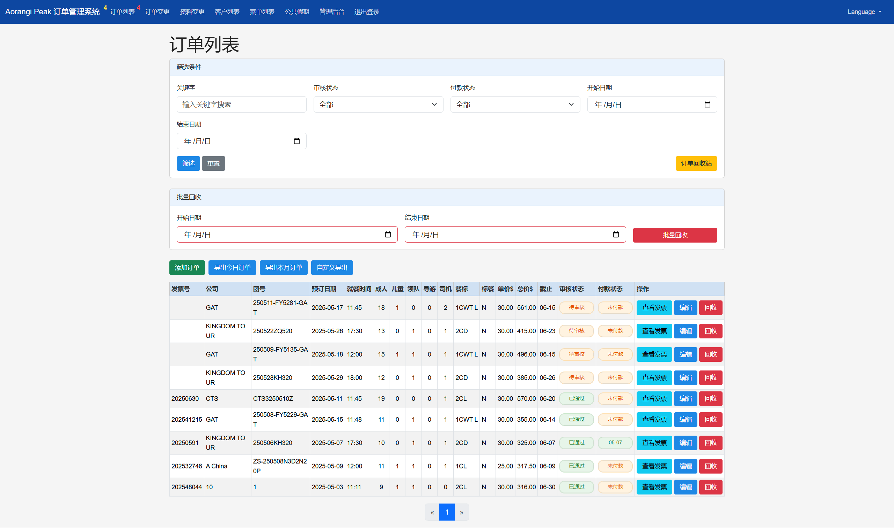
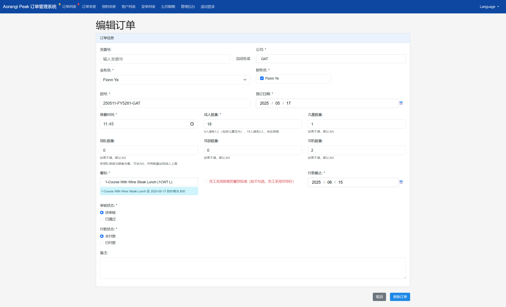
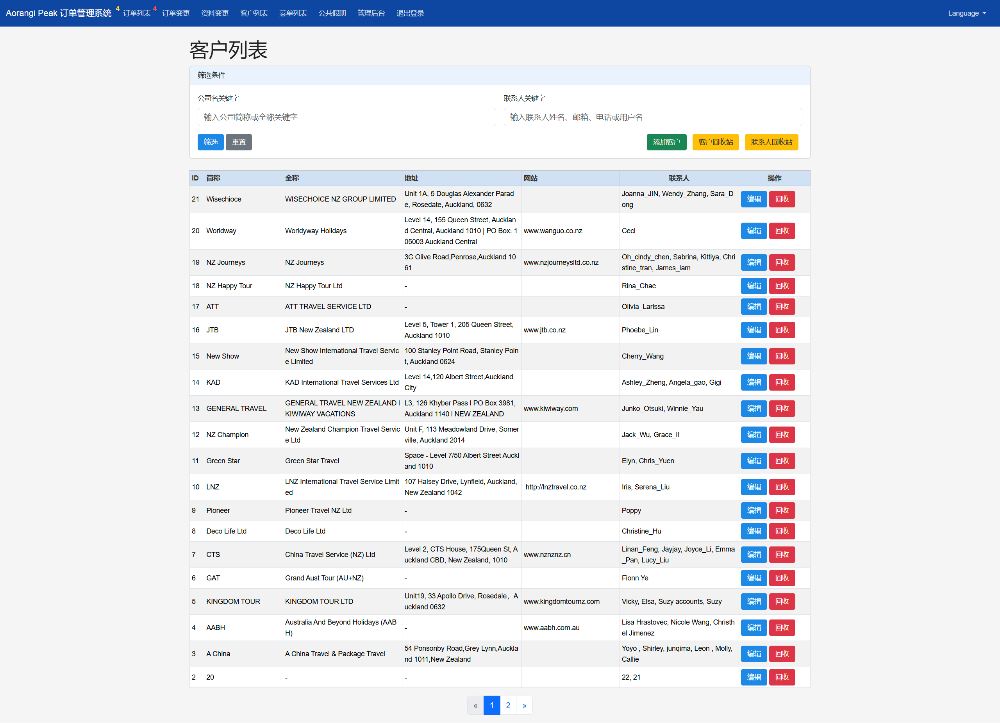
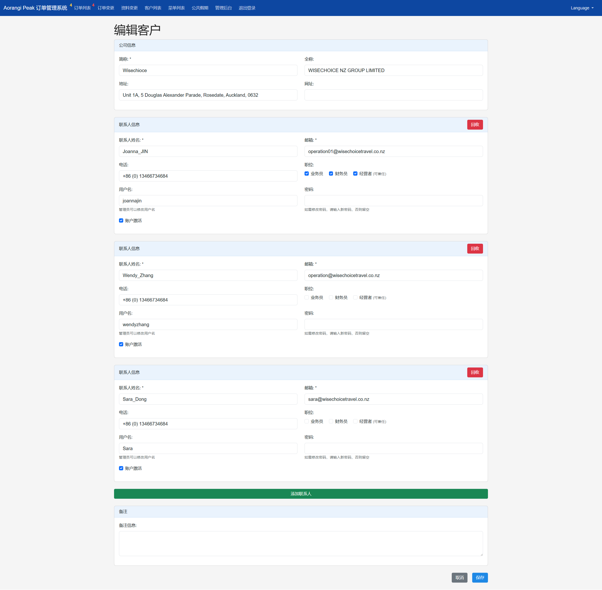

A comprehensive, full-featured online order management system designed for the tourism and catering industry.
This project is a full-featured online order management system specifically designed for the tourism and catering industry. It aims to address the pain points of traditional order processing methods, such as inefficiency, lack of transparency, and proneness to errors. Through digitalization and automation, it helps catering businesses achieve fine-grained management of the entire business process chain, from customer ordering, order review, menu management, and price control to bill generation, data export, and multilingual support. The system not only improves operational efficiency and reduces management costs but also enhances the company's market competitiveness by optimizing the customer experience.
Robust multi-role system (Admin, Sub-Admin, Customer with Operator/Financier/Head roles) ensuring data security and operational compliance via Role-Based Access Control (RBAC). Features secure registration, login, password hashing, and recovery, alongside account activation/deactivation and soft delete capabilities.
 Image: User and permission settings interface.Comprehensive management of tour company information, contact details, and account associations. Allows customers to submit profile change requests online, with admin approval workflows and full audit trails.
Supports menu categorization, item creation, editing, and soft deletion. Implements an intelligent pricing system including current/future pricing with automatic activation dates, differentiated pricing for adults, children (auto-calculated ratios), and staff (tour leaders, drivers, guides). Features flexible discount strategies like "1 free staff for every 9 customers" (configurable to include/exclude children).
 Image: Menu items and pricing rules.Full lifecycle order processing: creation, editing, multi-level approval workflows (Pending, Approved, Rejected). Provides real-time order status tracking, intelligent payment management (status, date, auto invoice number generation, due dates), and online order change/cancellation requests with admin approval and history logging.
 Image: Order list view with status indicators.Multi-dimensional report exports: quick daily/monthly standard reports, and advanced custom exports with field selection and criteria filtering (date range, customer, payment status). Utilizes `XlsxWriter` for dynamic Excel generation with auto-formatting and smart column width adjustment. Secure, expiring, token-based encrypted links for sharing exported files.
Automated generation of professional invoices from order data, with online viewing and download. Integrated email notifications (Flask-Mail) for invoices, payment reminders, and order status changes. Customizable public holiday service fees automatically calculated and applied to orders and invoices.
 Image: Example of a generated invoice or billing section.Flexible admin settings for company info, default staff meal prices, SMTP server, notifications. Built-in multilingual support (Chinese, English) with real-time UI switching and persistent user preferences (Flask-Babel). Comprehensive database management: manual/auto backup, upload/restore, and recycle bin functionality.
Beyond the core requirements, I took the initiative to develop several key features aimed at significantly improving system robustness, administrative efficiency, and overall user experience. These enhancements were implemented proactively to deliver a more polished and user-friendly product: